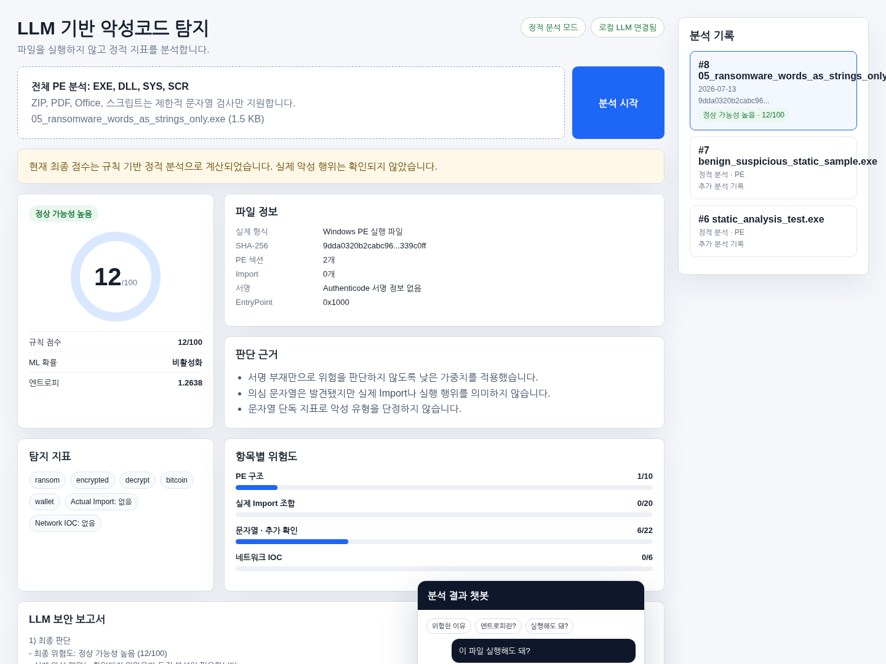

LLM 기반 악성코드 분석 도구
PE 파일의 정적 분석 결과를 한곳에 모으고, 로컬 LLM으로 내용을 풀어서 보여주는 도구입니다.
- 형태
- 개인 보안 프로젝트
- 역할
- 기획 · 설계 · 구현
- 기술
- Python · FastAPI · PE Analysis · Random Forest · Ollama
- 입력
- EXE · DLL · SYS · SCR
- 저장
- SQLite · SHA-256 기반 분석 이력
만든 이유
악성코드 분석을 공부할 때 PE 헤더, 섹션, Import, 문자열과 IOC 결과를 도구마다 따로 확인하는 점이 불편했습니다. 파일 하나를 올리면 필요한 정적 정보를 순서대로 정리하고, 마지막에 그 결과가 어떤 의미인지 설명해 주는 형태로 만들었습니다.
API 이름 하나만으로 악성 여부를 정하지 않고 여러 지표를 같이 보도록 구성했습니다. LLM은 탐지를 결정하지 않고 이미 계산된 결과를 읽기 쉽게 설명하는 역할만 맡습니다.
전체 처리 흐름
sample = save_upload(file)
static = analyze_pe(sample)
rule_score = score_rules(static)
ml_score = model.predict_proba(to_features(static))
save_result(sha256(sample), static, rule_score, ml_score)
report = explain_with_local_llm(static, rule_score, ml_score)업로드한 파일은 먼저 이름과 크기를 검사한 뒤 임시 경로에 저장합니다. 이후 정적 분석, 규칙 점수, 머신러닝 점수를 계산하고 결과를 SQLite에 남깁니다. 같은 SHA-256 해시가 있으면 기존 분석 기록을 다시 사용할 수 있게 했습니다.
정적 분석에서 모은 정보
{
"pe": {
"machine": "AMD64",
"entry_point": "0x140001000",
"sections": [".text", ".rdata", ".data"]
},
"imports": ["CreateFileW", "VirtualAlloc"],
"strings": ["..."],
"ioc": {
"urls": [],
"ips": []
}
}PE 헤더와 섹션 정보, 엔트로피, 실제 Import, 문자열, URL과 IP를 따로 수집합니다. 문자열에 API 이름이 우연히 포함된 경우와 Import Table에 실제로 등록된 경우도 구분했습니다.
점수를 계산한 방식
규칙 점수는 PE 구조, API 조합, 문자열, 네트워크 IOC를 서로 다른 증거 그룹으로 나눠 계산합니다. 일반 프로그램에서도 자주 쓰는 API 하나만 발견됐다고 높은 점수를 주지 않고, 프로세스 조작이나 다운로드 실행처럼 관련 신호가 같이 나올 때 가중치를 높였습니다.
- PE 구조비정상적인 섹션 이름, 높은 엔트로피와 헤더 값을 확인합니다.
- Import 조합프로세스·메모리·네트워크 관련 API가 어떤 조합으로 포함됐는지 봅니다.
- 문자열과 IOC실행 흔적, URL, IP를 분리하고 문서용 주소처럼 의미 없는 값은 제외합니다.
- ML 보조 점수47개의 정적 특징으로 만든 Random Forest 결과를 규칙 점수와 함께 표시합니다.
LLM을 연결한 부분
원본 실행 파일 → 전달하지 않음
정적 분석 결과 JSON → 로컬 Ollama에 전달
규칙 및 ML 점수 → 설명의 참고 정보로 전달
사용자 질문 → 현재 분석 결과와 함께 전달원본 파일은 LLM에 보내지 않습니다. 분석 결과를 JSON으로 정리한 뒤 로컬 Ollama에 전달하고, 결론·근거·권장 조치 순서로 답하도록 프롬프트를 구성했습니다. Ollama가 실행 중이 아니어도 정적 분석과 점수 결과는 그대로 확인할 수 있습니다.
결과 화면

화면은 파일 기본 정보, 점수와 탐지 근거, LLM 설명 순서로 읽을 수 있게 정리했습니다. 별도의 검증 데이터셋으로 성능을 평가하지 않았기 때문에 정확도나 탐지율은 표시하지 않았습니다.
만들면서 확인한 점
정적 분석은 실행하지 않고도 빠르게 단서를 모을 수 있지만, 패킹이나 난독화가 적용된 파일에는 한계가 있습니다. 규칙을 많이 추가하는 것보다 오탐이 생기는 조건을 함께 기록하는 편이 더 중요했습니다.
다음 단계에서는 benign/malware 데이터셋으로 Precision, Recall, F1과 FPR을 측정하고, 별도 VM을 이용한 동적 분석 결과도 같은 화면에 연결할 예정입니다.